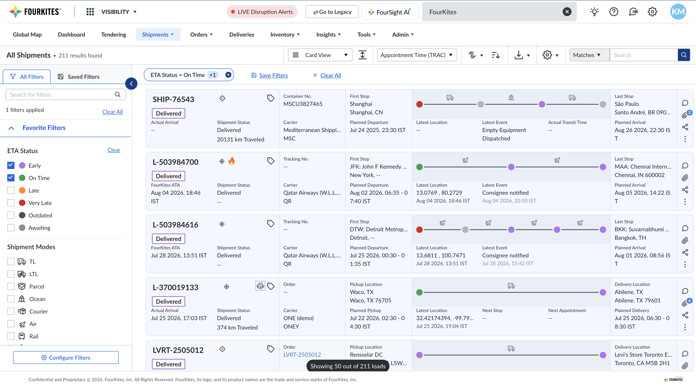
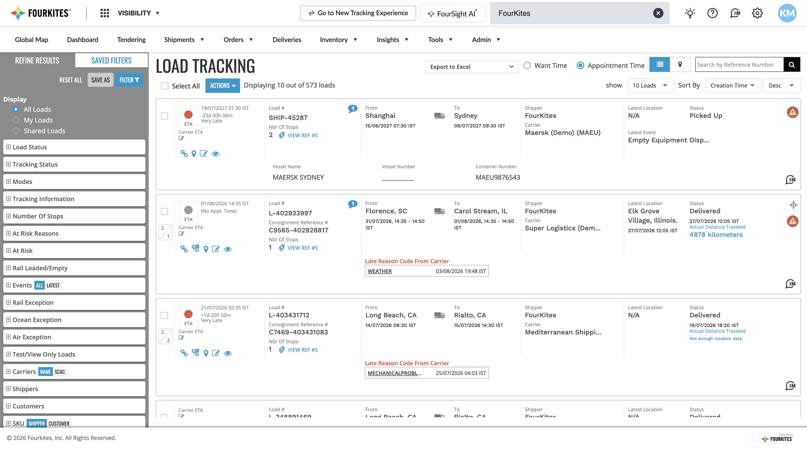
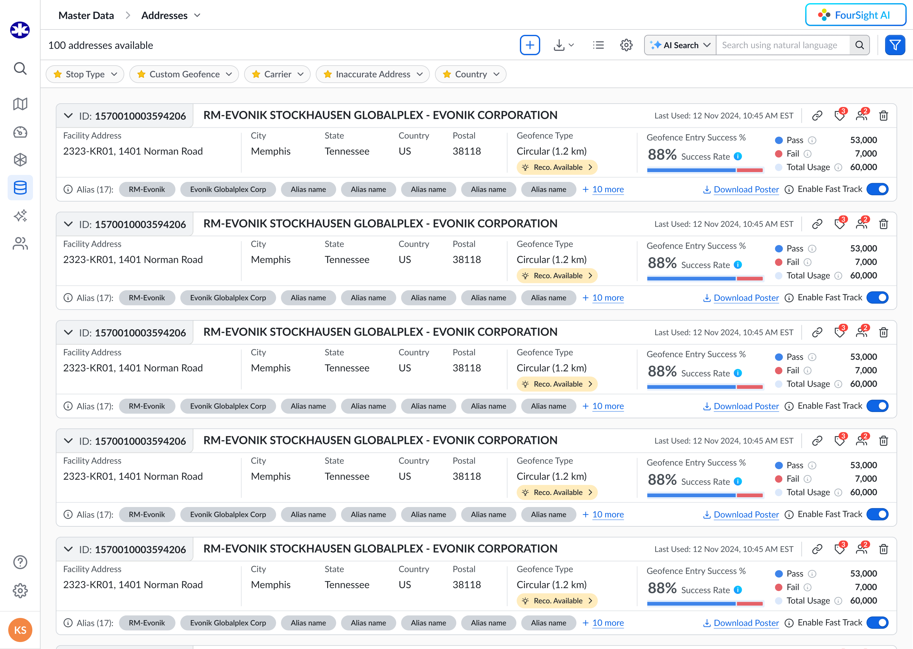
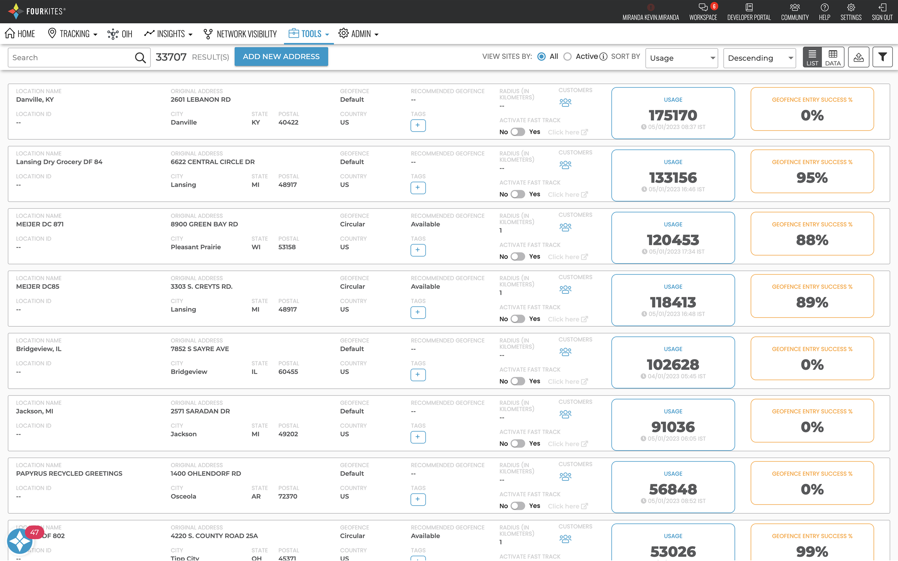
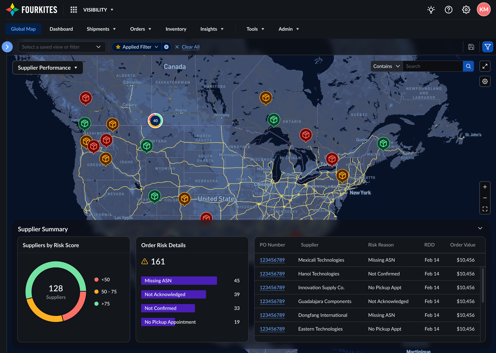
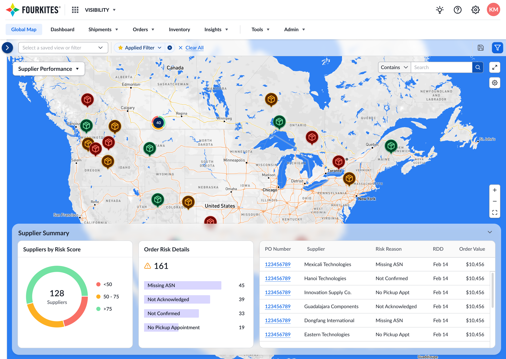

A collection of UX case studies from my time at FourKites — spanning design systems, AI product design, navigation architecture, and customer-driven feature work — plus a look at how I actually work, from problem to production. Each one reflects real customer feedback, real product decisions, and real outcomes.
How I Work
01
Vibe-Coding with Claude
Turning Deprioritized Backlog Issues Into Shipped Fixes, Solo
An AI-native workflow for turning customer-reported issues — and long-deprioritized UI/UX issues — into shipped fixes, designed and built solo before handing off to engineering for review and release.
Context & Problem Statement
Customers report issues and ideas through a public community forum, and plenty of smaller UI/UX issues simply sit deprioritized behind higher-priority engineering work indefinitely. Turning either kind of feedback into a shipped fix traditionally means routing it through several teams and a backlog. This project is a faster, more direct path: diagnosing the real problem and designing and building the fix myself, using Claude as a coding partner, then handing it to engineering as a ready-to-review pull request.
My Role
Own the request-to-pull-request loop solo: gather usage data and other supporting evidence with AI before touching any code, decide the right approach based on that evidence, design the solution, vibe-code it directly in the relevant app repository using Claude Code, and test it locally. From there it's a standard pull request — engineering reviews, merges, tests, and releases it to production. Once it's live, I follow up with the customer who originally posted the request to let them know it's been delivered. A few real examples:
A customer on Unilever's North LATAM team asked to filter by multiple carrier codes at once instead of one at a time — a request with strong support from other users. The fix went through this process and shipped.
A customer at BRP asked to add a "watcher" to multiple shipments at once instead of one by one. Before designing it, usage data was pulled to confirm real demand — the existing single-shipment version was barely used, while a similar bulk action elsewhere in the product was used constantly, confirming the gap was the missing bulk option, not low interest. The fix shipped shortly after.
Reviewed and refined a teammate's AI-assisted fix for a shipment status indicator, contributing UX constraints before it shipped.
Additional community-requested fixes have gone through this same process for customers at Cargill and Direct Roots.
Process
Click any step to see what happens there.
→→→→→→→
Click any step above to see what happens there.
Design Strategy / Approach
Currently exploring ways to make this process even more efficient — including exporting the design system as structured design tokens, which can reduce AI token usage by roughly 70% while keeping generated UI consistent with the design system.
Impact & Outcome
Several customer-requested fixes — plus UI/UX issues that had sat deprioritized for a long time — have shipped through this process so far, each resolving a real, validated customer need.
02
My Design Process
From Raw Problem to Shipped Product, Before and After AI
How I take an idea from a raw problem to a shipped product — before AI was part of my workflow, and after.
Context
Over 10 years as a Senior Interaction Designer, I've relied on the same repeatable process to move from an ambiguous problem to a released feature: discover, diagnose, ideate, validate, build, ship. That shape hasn't changed. What has changed is how fast I move through it, now that AI is a working partner in my day-to-day practice rather than a tool I reach for occasionally. This project lays out both versions of that process side by side.
Interactive Process Map
Click any phase to see its actual steps, pre-AI vs AI era. The bars below show illustrative time per phase — shorter is faster, not fewer steps.
→→→→→
AI-assisted in the AI era
Time taken (illustrative)
Pre-AI
AI era
Click any phase above to see its steps, pre-AI vs AI era.
Full Step-by-Step Reference
The complete process, phase by phase — 13 steps before AI, 12 steps now.
02Understand root cause & customer pain points, aided by AI analysis
Ideate
→
03Leverage AI to research & generate solutions
Validate
→
04AI-generate lo-fi prototypes
05Review the AI artifact with UX & Product
06Iterate on feedback with AI, until approved
07AI-build a hi-fi prototype in the design system
08Gather feedback from stakeholders & customers
Build
→
09Create engineering handoff specs
10Hand over designs & assets to Engineering
11Run UXAT with engineering, fix issues
Ship
12Sign off & release to production
AI-assisted step
What Actually Changed
Speed of exploration: solution research and lo-fi prototyping compressed from a multi-day effort into a single working session.
More shots on goal: because early-stage output is cheaper to produce, I can explore more solution variants before committing to one, instead of anchoring early on the first idea that felt workable.
Earlier, higher-fidelity conversations: stakeholders and customers now react to something close to a real hi-fi prototype much sooner in the process, instead of a hand-sketched lo-fi wireframe — sharpening feedback earlier.
Same rigor where it matters: problem discovery, root-cause diagnosis, internal sign-off, customer validation, engineering handoff, and UXAT are unchanged — AI sped up production, not judgment.
My Role
I own this process end to end on every project I lead — from the craft-driven version I built over the first several years of my career to the AI-augmented version I use today — including deciding where in the process AI actually earns its place, and where hand-craft and human judgment still matter more.
Impact & Outcome
The result isn't a shorter process — it's a faster one, with more room in the same timeline for iteration and validation instead of production. The Vibe-Coding with Claude project (above) is the natural extension of this shift: taking the AI-assisted version of this process all the way through to shipped code, solo.
03
UX Acceptance Testing (UXAT)
Raising Design-to-Code Fidelity From 60% to Over 90%
A structured quality-assurance process ensuring every UI/UX change gets a designer's sign-off before release — replacing an untracked, spreadsheet-based bug backlog with a clear, prioritized workflow.
Context & Problem Statement
Features regularly shipped with UI issues — some simple, some complex — that went unfixed for a long time because they were categorized as low-priority. These "minor" bugs were a persistent source of friction for users.
There was no dedicated system for tracking UX bugs and defects. Most were tracked in a spreadsheet, which gave the product team no real visibility into what existed or its status.
Prioritizing these issues was difficult without that visibility, and they often sat in the backlog indefinitely.
My Role
Contributed input during the process's creation, which was primarily designed by another member of the UX team. Since its rollout, I've been one of its strongest advocates in practice — none of my own design work ships without going through a full, rigorous round of UXAT.
Design Strategy
Every UI/UX-impacting change is checked against three things before it can ship:
End-to-end design flow & use cases: does the shipped feature match the signed-off design screens, user flows, and responsive behavior?
Design system compliance: does it correctly follow the design system's components, typography, spacing, layout, resolution, and color guidelines?
Content & language: consistent tone and correct copy across labels, menus, error messages, and CTAs — including spelling.
Process
A mandatory "Is UX needed?" field was added to every ticket, flagging whether a change has any UI impact.
If flagged, the UX team is notified automatically once code is pushed for review — so UX review happens alongside code review, not as a later afterthought.
The mandatory "Is UX needed?" field added to every ticket, flagging UI impact right at intake.
Once QA is complete, every UI/UX-impacting ticket moves into a dedicated UXAT stage in the workflow.
A UX team member reviews the feature against the criteria above:
If it meets expectations, it's marked approved and moved to "Ready for Release."
If it doesn't, it's sent back to development with specific issues flagged, to be resolved before the sprint ends.
The dedicated UXAT lane in the ticket workflow, sitting between QA and Ready for Release.
If a UX bug is later found in staging or production, it's logged as a formal defect — tagged as a design/implementation miss — rather than left untracked, and prioritized directly with product and engineering during sprint planning.
The process also includes participating in Shift Left Testing — proactive QA collaboration sessions aimed at catching defects earlier in the delivery cycle, before they reach later stages.
Logging a UX bug as a formal defect — tagged "Design/Implementation miss" under Source of Issue.
Impact & Outcome
Replaced an invisible, spreadsheet-based bug backlog with a tracked, prioritized workflow built directly into the existing ticketing system, giving the product team real visibility into UX-specific issues for the first time.
New features and releases now align closely with what the UX team actually designs and hands off to engineering.
UI/UX issues are caught early, before they ever reach customers.
The process also surfaces technical limitations during review, letting the team redesign solutions that work better within real platform constraints — rather than discovering the mismatch after release.
Component states, interactions, and edge cases that used to get missed during implementation — often due to other interfering code elsewhere in the platform — are now caught before shipping to production.
Design-to-code fidelity improved significantly: before this process, engineering's output rarely matched what UX designed and handed off, tracking at roughly 60% visual and behavioral alignment. Since UXAT became standard practice, that alignment has risen to over 90%.
Highlighted Projects
04
Elemental Design System
Unifying a Fragmented Product Portfolio Under One Shared Foundation
A company-wide design system — a shared foundation of colors, typography, grids, and components built to unify the look and feel across the entire product portfolio.
Context & Problem Statement
Founded and built in close collaboration with Engineering, to standardize the look and feel across the company's entire product portfolio — replacing what had been an inconsistent, product-by-product visual language.
Fragmented visual language: every app in the suite looked and behaved differently, with no reusable patterns between them.
High cognitive load: customers relearned interactions from scratch in each app, even though to them it was simply one product from one vendor.
Snowflake components: one-off elements built for a single use case, forcing engineers to rebuild even the smallest components again and again.
Inconsistent behavior: the same-looking component (e.g. search) could behave differently app to app, breaking user expectations.
My Role
Founded and own EDS since inception — auditing components, fixing accessibility and interaction issues, and keeping the library current as the product evolves.
Drove adoption by raising awareness across engineering teams and establishing a consistent process for using the system.
Still actively leading it today, now alongside a small handful of engineers.
Design Strategy
Built on one idea: components, patterns, and experience should carry over from one product to the next — to the customer, it's never "this app" vs. "that app," just one platform. Every pattern also had to be easy to use for our customers' typical age bracket (40+), many of whom aren't especially tech-savvy.
Color: a consistent tint/shade formula derived from a primary color.
Typography: a single standard typeface across the whole product.
Layout & grid: a shared system across every app.
All built on WCAG accessibility minimums and a component-reuse philosophy.
Methodology
Structured around Atomic Design, Brad Frost's methodology for building interface systems out of five nested layers:
Atoms: the smallest functional pieces — a color token, a type style, a single input or button.
Molecules: simple, reusable groups of atoms, like a labeled input paired with a button.
Organisms: more complex, self-contained sections built from molecules and atoms, like a filter bar or a card.
Templates: layouts that arrange organisms into a page structure.
Pages: templates populated with real content.
This keeps every component traceable back to its building blocks and gives design and engineering a shared vocabulary — which is also why the library was built in phases, from foundational styles up to full components, rather than all at once.
The five stages of Atomic Design — the foundation this system's structure is built on.
Build & Rollout Process
Built in phases — foundational styles first, then input controls, then full components — including a complete migration of the design library to Figma.
New Component Request Process
Every new component starts as a request — from a designer, an engineer, or a need that surfaces during other design work.
First check: does this genuinely need a new component, or can an existing one be enhanced instead — so the library doesn't accumulate duplicates doing the same job.
If new, it moves through design → validation & testing → engineering handoff → UXAT → documentation & usage guidelines, before release into both Figma and Storybook.
How a new component request moves from intake to release — checked against existing components before any new build begins.
Component Sticker Sheet
A live look at the actual Elemental Design System — real interactive controls (not screenshots), built with the exact colors, type, and component specs pulled directly from the EDS Figma library, including every default/hover/focus/disabled state.
Color — Palette (600 shade)
Gray#535862
Brand#0B51B7
Error#D92D20
Warning#DC6803
Success#079455
Green Light#4CA30D
Green#099250
Teal#0E9384
Cyan#088AB2
Blue#1570EF
Purple#6938EF
Orchid#9245E2
Fuchsia#BA24D5
Pink#DD2590
Rosé#E31B54
Orange#E04F16
Yellow#CA8504
Brown#AE7F47
Color — Text & Surface
Text Primary#181D27
Text Secondary#535862
Text Tertiary#717680
BG White#FFFFFF
BG Secondary#FAFAFA
Typography — Lato
Display MD — 36/44
Display XS — 24/32
Text XL Semibold — 20/30
Text MD Regular — 16/24 (base body size)
Text SM Regular — 14/20 (hint/helper text)
Buttons — Solid
Buttons — Outline & Flat
Text Input
This is a hint text to help user.
This is an error message.
Dropdown
▾
This is a hint text to help the user
▾
This is a hint text to help the user
▾
Toggle
Live control — hover, tab to it, or click it to see the real default, hover, focus, and checked states. Second example shown disabled.
Checkbox
Live control — hover, tab to it, or click it to see the real default, hover, focus, and checked states. Indeterminate is set with JavaScript, same as it would be in product code. Third example shown disabled.
Radio
Live control — click either option, or tab through with the keyboard, to see the real selected, hover, and focus states. Third example shown disabled.
Tag (built from real EDS color tokens — exact component spec not individually pulled)
Tag label
UX Acceptance Testing
Helped establish a formal UX sign-off step before release: every UI change is checked against its approved designs, EDS components and spacing, and the product's content and tone — catching drift before it reaches customers instead of after.
Key Artifacts
An organization-wide Figma design system that I design and maintain — the single source of truth other designers and engineers use to build UI.
A coded implementation in React, Tailwind CSS, and shadcn, published to a Storybook instance so internal teams can view, reference, and consume components directly.
Internal documentation covering foundations and usage guidelines.
Impact & Outcome
Since EDS shipped, the platform has far fewer fragmented experiences and a noticeably more cohesive look, feel, and behavior across products.
40-60% faster development: reusable, ready-to-implement components cut the time it takes engineering to ship new UI.
Stronger consistency & fidelity: standard UX patterns applied consistently across every application and page, closing the gap between design intent and what actually ships.
Fewer clicks to the outcome: streamlined common interactions so users reach the result they're after in fewer steps.
Still expanding: rollout continues across remaining apps, with current work on full light/dark theming support. Actively maintained and used across every product team.
05
My Workspace
Driving Higher Engagement & Upsell Opportunities Through an Integrated Ecosystem
A scalable landing page that gives customers a daily, one-page view of performance, risk, and cross-sell opportunities across every licensed product.
Context & Business Challenge
Limited product visibility: customers were unaware of the full range of products & solutions available to them.
Missed opportunities: leadership flagged this as lost cross-sell and upsell potential.
Core challenges: siloed products prevented users from discovering solutions they already had access to; there was no bird's-eye view for executives.
The Legacy Dashboard Experience
My Role
End-to-end design ownership: conceptualized, ideated, and designed the entire experience from scratch — including two persona-based views, executive and operational.
Licensing experience: designed the licensing section showing which licenses a company holds versus what the platform offers — a key reference for company admins and execs to understand their current footprint and what's available to acquire.
Stakeholder & customer validation: ran feedback calls with multiple internal teams and stakeholders, reviewed designs with customers, and addressed all their feedback.
Cross-functional delivery: worked closely with product and engineering to ensure the final product matched the designs, concepts, use cases, and requirements, and shipped on time — also served as tester for functionality and UXAT.
Live customer engagement: ran live customer feedback sessions at Visibility 2023, at the My Workspace booth.
Design Strategy
Reusable design library: shared components to reduce design debt.
Interoperability: dashboards link seamlessly to other licensed products.
Data at a glance: crisp, contextual summaries readable within seconds.
Role-based personalization: distinct views for executive vs. operational users.
Two Personas, One Page
Rather than one generic dashboard, My Workspace ships with two default views tuned to how people actually work — configurable further from there:
Executive: historical, high-level aggregates — on-time performance, sustainability, revenue risk, order performance, facility performance, and a global map view — built for scanning trends and deciding without digging into individual tools.
Operational: live, actionable widgets for day-to-day roles like warehouse managers and transportation coordinators — appointment-reschedule recommendations, trailer-prioritization alerts, ETA tracking, detention and stock-out risk — several of which let you act (prioritize a trailer, reschedule an appointment) directly from the widget.
Process
Validation happened in two stages: internal cross-team testing first, then structured customer validation led by the product team through the Executive Customer Advisory Board (ECAB).
The product team ran structured validation calls with 8 named executives across 7 companies — including TJX, Trane Technologies, Frito-Lay, Coca-Cola Consolidated, 3M, Eastman Chemical, and Dow — over a focused three-week period.
Feedback was collected through a widget-by-widget rating exercise, split separately across executive and operational persona views.
I consolidated that feedback into prioritized design themes — drill-down by lane/carrier, share & export, international coverage, date filtering, and weather alerts were all incorporated.
A defined six-phase process governed how new dashboards were added: design discussion → wireframe walkthrough → engineering discussion → build → release → post-release monitoring, with usability sign-off required before every release.
The revamped Executive Summary view — gives a bird's eye view of the company's performance over the last few months.
Impact & Outcome
Unveiled at the annual Visibility Conference 2023 in Chicago — became the event's highlight.
Executive usage increased 18% within three months.
46% increase in upsells; 100+ new product leads generated; first upsell closed within one month.
Executive NPS grew 32 points.
Helped reposition the company from "visibility provider" to "Control Tower ecosystem player."
Customer Testimonials
"The concept is great, I liked the quick access to the aggregated data... YOU GUYS NAILED IT WITH THE UI."
Laura Ensell — Technology Director, Logistics, Dow
"My Workspace has truly changed the way we interact with our supply chain data. It's become a daily habit."
Mari Roberts — VP of Transportation, Frito-Lay
"The centralised landing page having all relevant information in one place means we no longer waste time searching across different platforms."
Tom Morton — VP of Global Supply Chain & Quality, Eastman Chemical
"The flexibility to customize the dashboard based on our personas is fantastic."
Joe Garvin — Director of Global Logistics, 3M
"Having all of FourKites' offerings consolidated into a single location is a game-changer."
My Workspace unveiled at Visibility Conference 2023.The dashboard shown during the conference announcement.Live product demonstrations at the conference booth.
06
Shipment Tracking Redesign
Rebuilding a Core Tracking Experience Around How Users Actually Work
Ground-up redesign of the platform's core shipment-tracking experience.
Context & Problem Statement
Leadership identified the need for a single, connected experience for tracking shipments across every mode of transport, replacing a fragmented set of legacy tools — and to invest in better self-service tools as the platform scaled. The initiative was scoped across six program-level areas: navigation, shipment cards, control tower, collaboration, map view, and international support. Within that, I played a major role in conception, execution, and delivery across the core customer-facing tracking experience:
Navigation: a single, extensible pattern that could support every mode — Truckload, LTL, Ocean, Rail, Parcel, and Air — plus multiple languages and white-labeling, without forking the experience per mode.
Shipment cards & list view: the existing cards treated every shipment identically regardless of phase. The redesign split shipment status into Pre-Pickup, In-Transit, and At-Stop, so each phase surfaces only the data that's actually reliable at that point — an ETA prediction on a shipment that hasn't shipped yet does more harm than good — with clearer signals on which data points are inferred versus customer-provided.
Shipments page configuration: let customers configure their own card view, list view, and filters, so the shipments page could be personalized to each team's individual use cases and scenarios rather than shipping with one fixed layout for everyone.
Shipment Details pages: redesigned the detail view customers land on from every card and search result, restructuring dense tracking, exception, and document data around the question customers actually land there to answer: where is it, and what's wrong.
Filter & filtering experience: filters were noisy, ate up a large share of the screen, and made simple things like reusing a team's saved setup unintuitive — the direct problem Saved Views (below) was built to solve.
Export experience: rebuilt how customers pull tracking data out of the platform, aligning what's exportable with what's actually filterable and visible on-screen.
Map view — shipment visibility & supplier consolidation: extended the tracking map beyond individual shipments to consolidate supplier-level visibility (fuller detail in the Global Map View case study elsewhere in this list).
Saved views: let power users bundle filters, column layout, and sort order into a single named View — covered as its own sub-project below.
Other feature releases, enhancements & bug fixes: an ongoing stream of smaller releases and fixes across the tracking experience post-launch.
(Control tower work from the same initiative is covered in its own case study elsewhere in this list.)
My Role
Led design across the redesign end-to-end — from initial concept through execution and delivery — owning navigation, shipment cards & list view, shipments page configuration, shipment detail pages, filtering, export, map view, and saved views, plus a steady stream of feature releases, enhancements, and bug fixes post-launch. Worked directly with enterprise customers — including SC Johnson, Henkel, and others — to validate designs and resolve real-world issues as they surfaced.
Design Strategy / Process
A mix of net-new feature design — Saved Views, Export, the filtering overhaul — and component-level audits against the design system for existing surfaces, with fixes prioritized by customer impact and increasingly supported by AI-assisted development to ship faster (see Vibe-Coding with Claude, below).
Search & Discovery
Filters were noisy, ate up a large share of the screen, and made simple things like reusing a team's saved setup unintuitive — while the search box had quietly become a workaround for filtering limitations it was never meant to solve. Saved Views, below, was the direct response to that gap.
Before & After
The redesign replaced a dense, one-size-fits-all shipment list with the phase-aware experience described above. Drag the handle to compare the classic tracking UI against the redesigned one.


BeforeAfter
Classic tracking UI (left) vs. the redesigned experience (right) — drag to compare.
▸ Sub-project
Saved Views
Letting power users bundle their filters, column layout, and sort order into a single named "View" — built directly from a customer's idea.
Context & Customer Signal
The idea originated from repeated customer requests submitted through the community idea exchange over several years — including asks from Bridgestone Americas, Church & Dwight, LyondellBasell, and Dow — pointing to the same long-standing pain point: needing to reconfigure filters, columns, and sort order every time.
My Role
Took this from a raw customer idea through to a fully specified feature — writing the problem statement, proposed solution, and seven detailed user-story flows with acceptance criteria.
Design Strategy
Personal, not shared (v1): Views scoped to the individual user.
List View only (v1): Card View out of scope for the first release.
Non-destructive exploration: temporarily tweaking a filter doesn't alter the saved View — a subtle indicator shows the change, with one-click reset.
Explicit Edit Mode: updating a saved View requires deliberately entering an edit state, with a safeguard against accidental changes.
Impact & Outcome
Currently in development, not yet released to customers.
Photos
07
FourSight AI
Making Supply Chain Data Answerable in Plain Language
The platform's AI assistant — from a contextual sidebar chat to a full-page data-explainability experience.
Context & Problem Statement
The prior landing-page experience packed in many separate dashboards, requiring users to navigate complex menus and filters just to find relevant information — creating high friction for new users. FourSight was designed to pair a conversational AI assistant with clearer, more guided data exploration.
My Role
Wireframed and designed the initial concepts — evolving the product's requirements from an AI-powered chatbot into a full-fledged application with a standalone page and insights experience.
Defined how each component, state, and interaction should look and behave.
Worked with engineering to get the designs properly built, running UXAT and driving feature enhancements.
Design Strategy / Process
Iterative usability testing cycles: refining the transition from a sidebar chat to a full-page view, adding conversation history, and improving in-product search.
Product Capabilities
FourSight AI is the platform's conversational analytics assistant — instead of digging through dashboards, menus, and filters, users ask a question in plain, natural language and get back an answer complete with the underlying metrics, deeper analysis, and a chart or visualization where relevant. It supports 24 languages, so global teams can work with it in their own language rather than translating queries into a fixed report format.
The experience spans two tiers. The free tier handles day-to-day shipment questions — status lookups, natural-language filtering across carriers, customers, and lanes, and disruption/risk queries — answered off real-time shipment data, plus general platform how-to questions from the knowledge base. The premium tier extends that same conversational layer across orders, inventory, yard operations, and appointments, adding predictive analysis and deeper historical, cross-module reporting.
A typical question looks like "Which carriers have the most loads running late right now, broken down by carrier?" or "Show me all delayed shipments going to California this week." The system classifies each question's intent behind the scenes, routing it to the right data source and tier automatically — the user never has to know or choose which system is answering.
▸ Sub-project
Generative UI (GenUI)
FourSight AI's newest capability — building the interface itself, in real time, based on what a user actually asks for.
My Role
Designed the experience — the features available, the outcomes it delivers, and how it behaves.
Defined how each flow works, based on the customer's query.
What It Is
Generative UI (GenUI) is FourSight AI's newest capability. Rather than a developer hard-coding every screen ahead of time, an AI model constructs the interface itself, in real time, based on what the user is actually asking for — adapting the layout, components, and data visualization to the specific request instead of forcing the request to fit a fixed, pre-built screen.
How It Works Under FourSight
Under FourSight, GenUI can generate dashboards, views, tables, reports, charts, widgets, and layouts on demand — or, for a simpler question like "Where is my shipment?", just answer directly with the relevant data. Whatever a user asks, FourSight intelligently classifies the intent behind it and builds the right output in real time, whether that's a piece of data, a chart, a widget, or a full layout.
The conversation doesn't stop once a view is generated — users can keep refining it, asking FourSight to change a chart type, add or remove a widget, adjust a filter, or explain how a specific number was derived. A generated view can also be saved and reopened later, refreshing with current data rather than showing a frozen snapshot from when it was first created.
Design Principle: Real Data, Never Guessed
A core design principle behind GenUI: the AI only ever decides what to show and how to lay it out — never the underlying numbers. Every value in a generated view is pulled directly from live data, so nothing is fabricated or approximated to fill a gap; if the data isn't available, a widget simply stays empty rather than showing a guess.
Impact & Outcome
The result is a UI that's effectively customized to each individual user, without routing every new page, dashboard, report, or layout through the usual design-and-build cycle — a process that's normally slow and resource-intensive to repeat for every use case.
Status: currently in active development, with a general availability date already planned per internal product documentation — not yet released to customers.
Photos
Impact & Outcome
FourSight AI went generally available in November 2025 and is now live with 400+ enterprise customers, drawing on a network that tracks 3.2 million shipments a day. The pitch: think of it as a "Bloomberg Terminal for supply chain" — pairing each customer's own operational data with that broader network intelligence to turn a conversational question into a strategic, predictive answer.
Photos
08
Address Manager
Grounding a High-Traffic Tool’s Redesign in Real Usage Data
A full usage audit and end-to-end redesign of one of the platform's most heavily used tools — grounded in real product analytics, not just a visual refresh.
Context & Problem Statement
Address Manager stores every stop address a shipper uses — pickup, delivery, and yard locations — and lets customers define the geofence around each one, which the platform uses to detect arrivals and departures. It's one of the most frequently used tools in the product, but the existing table-style layout packed dense, low-contrast rows of data with no clear signal for which addresses actually needed attention.
My Role
Owned the redesign end-to-end: ran a full usage audit of the existing tool (engagement time, feature-level click data, and task flows), defined the UX goals and success metrics for the initiative, and proposed a new card-based interface built on the Elemental Design System.
Usage Audit
Before redesigning anything, I pulled real usage data to see how customers actually worked in the tool:
Users spent an average of 6m 31s per day in Address Manager, with Unilever North LATAM the single heaviest user at over 7,000 views in a 180-day window — alongside high-volume customers like Dow Chemical, Averitt Express, Penske Managed Transportation, and Niagara Bottling.
Feature-click data showed viewing card details overwhelmingly dominated every other interaction — dwarfing search, custom geofence editing, and version history combined — meaning the list view's main job was simply getting people to a single address faster.
Mapping the task flow (add address, edit address, export, view statistics) showed most journeys funneled through the same handful of actions, which became the basis for what the new card layout needed to surface up front instead of hiding behind a click.
UX Goals
Two goals anchored the redesign, each tied to a measurable target:
Reduce time spent managing addresses — from a baseline of 9.75 minutes to a target of 8.8 minutes per month, by surfacing the right information without extra clicks.
Increase adoption of the platform-recommended geofences — from a 24% baseline to a 70% target among shippers with a recommendation available, since geofence accuracy directly drives tracking reliability.
Platform-Recommended Geofence
A core piece of the redesign: instead of leaving customers to hand-draw and guess at geofence shapes, the tool recommends a better-performing geofence based on that customer's own history at the location, or the best-performing geofence used by other shippers at the same site across the network. On individual addresses tested, activating the recommended geofence improved entry-success accuracy by roughly 11–13% over the existing custom shape.
Proposed Design — Card View
Replaced the dense, low-contrast table with a scannable card grid: each address card surfaces its geofence entry-success rate as an at-a-glance ring, shows whether a better-performing recommended geofence is available with a one-tap Activate action, and exposes the connected services (EDocs, Yard Connect, Appointments Manager) as inline toggles — removing the need to open a record just to check or flip a switch.
Before & After
Drag the handle to compare the existing card layout against the redesigned one.


BeforeAfter
Existing Address Manager card view (left) vs. the redesigned card view (right) — drag to compare.
Impact & Outcome
The audit gave the team a real baseline to design against instead of guessing, and the recommended-geofence work showed measurable accuracy gains on individual addresses. It also reinforced validation from elsewhere in Address Manager — Fast Track, a related tracking-reliability feature, has strong customer results:
"The week after implementing Fast Track we were tracking at 88%... we achieved multiple weeks of 100% tracking in a row."
Carrie Conrad — Land O'Lakes
Photos
09
Unified User Management System
Collapsing Three User-Management Paradigms Into One
Unifying three fragmented per-product user-management systems — Visibility, Dynamic Yard, and Appointment Manager — into a single, consistent experience built on a scalable roles-and-permissions model.
Context & Problem Statement
Each product in the suite had evolved its own user-management model: Visibility handled it through a direct Admin → Users flow, Dynamic Yard ran on a completely separate Keycloak-based system under Setup → Enterprise → Users, and Appointment Manager needed a user created in Visibility first before it could be separately assigned there. Admins had to learn and maintain three different paradigms just to manage who had access to what.
My Role
Led the initial concept & architecture discussion: proposed unifying all roles, permissions, and groups into one scalable model — users, user groups, and roles-with-permissions — with roles inheriting into user groups and per-user overrides for edge cases.
Defined the permissions model with engineering: worked through Functional Access Privileges (FAP — what a user can do) versus Data Access Privileges (DAP — what data/facilities/sites they can do it on), including how conflicting DAP rules across multiple user groups resolve to the most restrictive setting.
Owned UX end-to-end: from early concept wireframes through the User List View and Create User flows to final UXAT, including a pass to make sure every component was pulled from EDS rather than custom-built.
User List View & User Creation
The first shipped piece: a unified Admin → Users page replacing the fragmented per-product screens. The list view gives admins a paginated, filterable, searchable table of every user — app access, user group, and status (Active/Inactive/Locked, color-coded) — with inline edit, lock, and bulk actions. Creating a user is a full-page form: basic details plus one or more User Groups, with the roles and app access each group would inherit shown inline before saving, so an admin can see exactly what access they're granting before committing.
The end-to-end flow — from the unified user list to creating a user and seeing inherited roles before saving.
UX Acceptance Testing
Ran a full UXAT pass against the built experience, catching drift from the design system before release — filter chips not matching the EDS filter bar pattern, list-view text using colors outside the EDS palette, status chips off-spec on type size, and non-EDS input components on the details page, among others.
Additional Projects
10
FK Connect
Replacing Manual Carrier Onboarding With a Three-Click Flow
A self-service onboarding tool that replaced a slow, manual carrier-network setup process with a three-click flow.
Context & Problem Statement
Previously, connecting a shipper to a new carrier required manual setup by an administrator, plus separate backend credential configuration — a slow process with long customer wait times. Self Onboarding replaced this with a simple three-click flow: pick a carrier, enable tracking, and go.
My Role
Responsible for the UX design and live presentation of this feature at a company-wide product demo day, including building the Figma prototypes and recording the feature walkthrough. Ran pre/post-launch Pendo metric analysis on two of the flow's key pages — the Carriers Sign-up page and Carriers List page — to validate impact and prioritize the next round of improvements.
▸ Sub-project
Carriers Sign-up Page
A two-stage funnel fix — from carrier invite email to the sign-up form itself — that lifted page visits 4–5X and account creation 286%.
Study Methodology
Pendo Metric Analysis of the carrier self-service sign-up flow, comparing Jan–Mar 2023 (baseline) against Apr–Jun 2023, following a sign-up page update shipped in April 2023.
How the Flow Starts
A carrier receives an email invite from the shipper they work with (e.g. "Magellan Transport Logistics is requesting to connect with you via FourKites"), covering who we are, the platform's benefits, and its data policies. A "Join" button in that email leads directly to the self-service sign-up page.
The redesigned Carrier Sign-up page — leading with brand, benefits, and an explainer video.
Next Step — Adding a GPS/ELD Provider
Once signed up, the carrier's next step is connecting their GPS/ELD provider — the piece that actually turns on live tracking data flowing into the platform.
After signing up, carriers connect their GPS/ELD provider to enable tracking.
Problem 1 — Low Click-Through
Most invited carriers never proceeded past the email: only an average of ~300 visitors/month clicked through to the sign-up page (Jan 207, Feb 334, Mar 427). Working hypotheses: carriers didn't know enough about the platform to bother clicking, or were already using a competing platform.
Solution 1 — Lead with Brand & Benefits
Rebuilt the invite/landing experience to inform rather than just prompt — leading with a "Why Join?" benefits list (save time, improve customer service, reduce dwell time, validate detention claims) and an explainer video, instead of a bare logo and button.
Result 1
Visitors to the self-service sign-up page jumped to as high as 2,691 in April, settling around 1,000–1,600/month through May and June — a 4–5X increase over the pre-update baseline.
Problem 2 — Drop-off at Sign-up
Of the carriers who did reach the sign-up page, many still didn't complete it. Working hypotheses: carriers didn't trust the platform, or had privacy concerns about the data being requested.
Solution 2 — Build Trust at the Point of Sign-up
Personalized the form with the requesting customer's name and company (making the ask feel specific rather than generic), restated the benefits directly on the form, and added the explainer video — reinforcing legitimacy at the exact moment carriers were deciding whether to hand over information.
Result 2
Accounts created grew to roughly 1,000/month, a 286% increase quarter-over-quarter — from 794 sign-ups in Q1'23 to 3,067 in Q2'23.
Conclusion
Both problems traced back to the same root cause: carriers' lack of trust in and knowledge of the platform, which suppressed click-through and completion at every stage of the sign-up funnel. Adding trustworthy elements — customer/company personalization, benefit messaging, and an explainer video — at both the invite and the form fixed it.
▸ Sub-project
Carriers List Page
Pendo metric analysis on an information-hierarchy redesign of the carriers list page.
Increase feature usage and reduce the time taken to absorb information on the carriers list page.
Solution
Rebuilt the page around a proper information hierarchy — clearer grouping plus actionable CTAs and recommendations in place of raw, undifferentiated data.
Key Results
Total users grew from 150 in Q4'22 to 481 in Q1'23 — a 220% increase in user visits.
Time required to understand the information dropped from 10 minutes to 7 minutes — a 30% reduction.
Number of clicks needed reduced to a single click.
11
Developer Portal
Giving Developers Self-Service Access to the Platform API
A self-service hub for partners and customers building on the public API — from the original 2020–21 launch through later feature additions.
Context & Problem Statement
Before the Developer Portal, customers had no self-service way to discover the APIs, test them, or manage their own access keys — every integration meant looping in an implementation contact instead of a developer just generating a key and reading the docs. The Developer Portal consolidated API discovery, documentation, testing, and access-key management into one place, free with a platform subscription.
My Role
Launch UX (2020-21): owned the user journey mapping and UX wireframes for the original Developer Portal launch, carried through Limited Availability to General Availability.
Global navigation placement: UX owner for where Developer Portal lives in the global navigation, working with Product to resolve whether it should sit inside or outside FK Connect.
Feature design: designed later additions including a Callbacks & Webhooks section, shared UX ownership within the design team for a set of new application features on the Developer Portal.
Rollout
The portal moved through a proof-of-concept phase with early customers before reaching Limited Availability in April 2021 and General Availability the following month. Post-launch feedback specifically called out revisiting the UX for scale and adding faster credential generation — both fed directly back into design.
12
Intelligent Control Tower
Consolidating Fragmented Apps Into One Cohesive Product
A unified navigation shell and digital-worker command center, consolidating previously fragmented product apps into one cohesive experience.
Context & Problem Statement
The Intelligent Control Tower combines supply chain visibility, AI automation, and predictive analytics — moving the company from passive visibility toward automated execution, powered by AI "digital workers" for supplier operations and shipment tracking. Previously, the web experience was a set of separately deployed apps, each maintaining its own copy of shared navigation; ICT consolidates these into a single, cohesive product.
The first flagship implementation was a landing page built for the Procurement Analyst persona, who previously had no single place to see order status, supplier performance, and delivery risk together — forcing them to piece that picture together across several disconnected systems before they could act on anything.
My Role
Served as the UX designer and UX reviewer across the entire Intelligent Control Tower project — from the Supplier Connect landing page and its context-aware map view, to the unified navigation shell tying the consolidated product together — working closely with engineering, product, and the broader UX team.
Unified navigation: worked on new unified navigation concepts together with the UX team, and designed the updated experiences for header navigation, filters, and dashboards that replaced the old per-app navigation.
Supplier Connect landing page: reviewed and refined the KPI metrics panel, trend charts, and AI-generated insights surfaced to procurement analysts, tailored to what that one persona needed to act on rather than a generic catch-all dashboard.
Risk Overview: defined the three-state model for AI-agent-driven risk resolution — items needing manual attention, items an agent is actively working, and items an agent has already resolved — including which fields surface at each state, such as risk reason, supplier, order value, and the time an agent's action saved.
Ranked carrier recommendations: defined detailed UI rules for a carrier-recommendation card built for a P&G demo — Transit Rank and Cost Rank badges alongside a color-coded Reliability Score, so a logistics buyer could compare carrier options at a glance.
Design Strategy / Process
Established consistent design rules across the consolidated experience — header navigation, filters, dashboards, and light/dark theming, including shadow, outline, and interaction states for map controls — backed by a structured design-to-development handoff process. The landing page itself was designed persona-first — validated end-to-end for the Procurement Analyst before any expansion to other roles — so it could prove out the model before being generalized further.
13
Global Map View
Designing a Map That Shows What a List Never Could
A purpose-built map experience for supply chain visibility, built on MapBox with light, dark & satellite theming — later evolved into a context-based view toggling between in-transit shipment tracking and supplier performance.
Context & Problem Statement
An internal review of the original map view found that it simply plotted the same data shown in the list view, with no clear problem of its own to solve. The redesign asked a different question: what could a map show that a list never could — leading to a purpose-built experience layering in risk, weather, and points of interest rather than just repainting the list in a different shape.
This first version helped establish the map's foundation — built on MapBox, with three themes (light, dark, and satellite) and every one of its own components designed from scratch: markers, asset icons, legends, and panels.
The map has since evolved into a context-based view, an iterative update layered on top of that original in-transit map: customers on the Supplier Connect package get a dropdown to switch between two purpose-built modes — In-Transit Visibility, the original shipment-tracking view, and Supplier Performance, a supplier-centric lens for procurement and logistics users to evaluate supplier reliability and risk. Each mode plots different data and supports a different decision, rather than forcing one map to do both jobs.
My Role
Original concept: helped design the map's original version from the ground up, building its theming on MapBox across three themes — light, dark, and satellite.
Map components: designed all of the map's components from scratch — markers, asset icons, legends, and panels.
Context-based map view (iteration): designed the toggle between In-Transit Visibility and Supplier Performance — an iterative update layered on top of that original in-transit map — including the distinct data, filters, and interactions each mode needs.
Reusable map components: later folded those components into the Elemental Design System, reusable across all three themes.
Supplier Performance View
Supplier Performance plots suppliers by location for a given delivery-date window (15 days back, 15 days ahead by default), clustering suppliers into a single marker when an exact address isn't available. Each supplier gets a color-coded Supplier Score built from historical on-time and in-full delivery data — red (below 50) flags low performers, amber (50–75) is moderate, green (above 75) is high-performing — so procurement analysts can spot risk at a glance before drilling into individual suppliers, risk reasons, or historical trends.
Design Strategy / Process
Early design principles — showing only the most important shipments, a "zoom to drill down" interaction model, and layered points of interest — carried forward into the current iteration's theme-consistency and legend-clarity work.
Light Theme vs. Dark Theme
Drag the handle to compare the same map in light theme (left) against dark theme (right). A third satellite theme also exists in production, not pictured here.


Light themeDark theme
Light theme (left) vs. dark theme (right) — drag to compare.